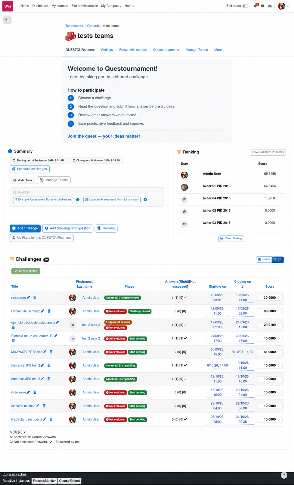
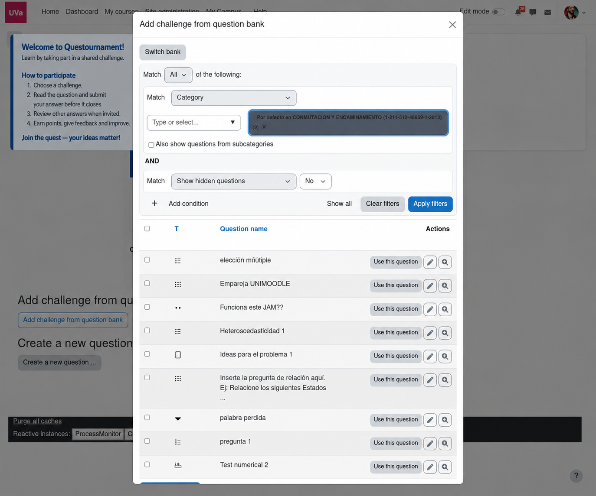
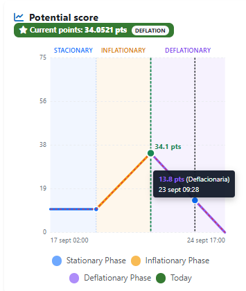

Pick a challenge
Read the context, difficulty and deadline before committing your answer.
One activity, two perspectives. Learners move through challenges and responses; teachers keep the arena clear, fair and alive.
The activity hub keeps the status of the contest, available challenges, deadlines and ranking in one place. Learners can decide where their contribution matters most.

Read the context, difficulty and deadline before committing your answer.
Submit an answer that makes your reasoning, process or result easy to evaluate.
Use feedback and the ranking as signals for your next move, not just a final grade.
Questournament uses Moodle’s native question bank and renders the selected question inside the challenge. Objective types can be auto-graded, while the student sees the familiar quiz interaction with question status, answer controls and feedback state.


Questournament keeps the question usage, answer state and score in the activity so practice can scale without losing the challenge context.
Track challenges, submissions and evaluation status. Intervene when a prompt needs clarification, a rubric needs refinement or a learner needs a new route in.
Statuses are not decoration: they tell the teacher where a challenge or response needs attention, and which next action is available.
Questournament can show a live classification and the detail behind it. Use points to make effort, quality, timing and challenge difficulty legible — then pair the numbers with conversation.

Teachers can select Moodle question-bank content when creating a challenge. Compatible objective questions can be auto-corrected, and students can also author automatic questions for the next round.
Yes. Start with teacher-authored challenges and enable learner authorship when the group is ready.
Yes. The activity supports individual or team participation, depending on how you frame the course.
No. You can combine teacher evaluation, peer evaluation and a shared rubric to match your activity.
Adapt the story, the challenge formats and the criteria to your learning goals.